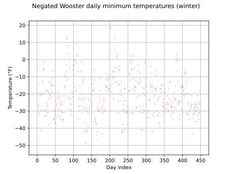
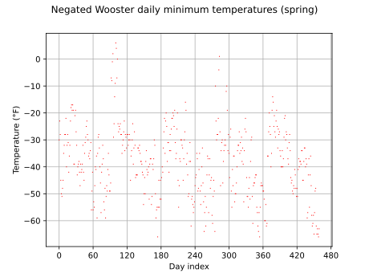
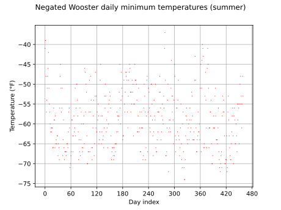
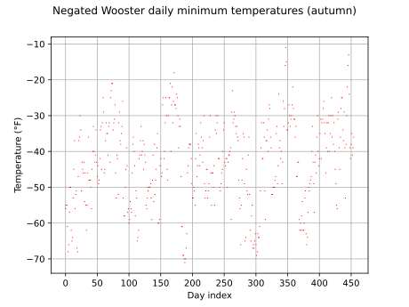
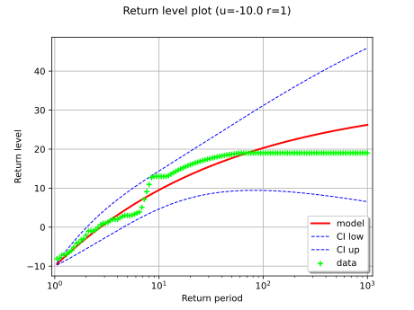
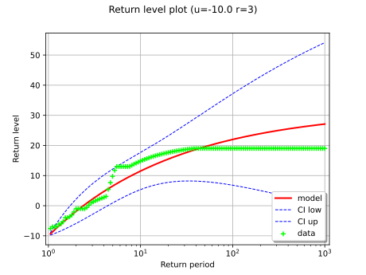
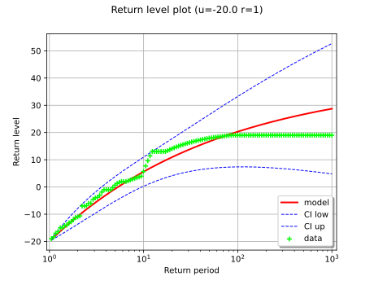
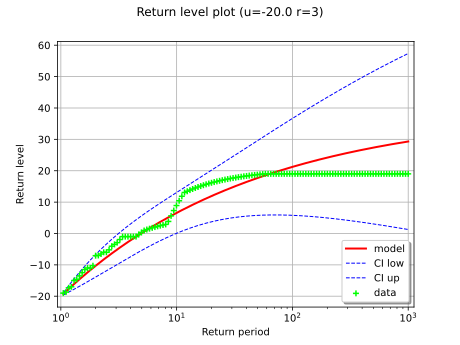

Note
Go to the end to download the full example code.
Estimate a GPD on the Wooster temperature data¶
In this example, we illustrate various techniques of extreme value modeling applied to the 5-year series of daily minimum temperatures recorded in Wooster, Ohio between 1983 and 1988. Readers should refer to [coles2001] example 1.7 to get more details.
import openturns as ot
import openturns.viewer as otv
from openturns.usecases import coles
import pandas as pd
First, we load the Wooster dataset. As we want to model very low temperatures, we first negate the values to transform minimum to maximum. Hence, large positive observations correspond to extreme cold conditions. We look at the negated data through time. The data are plotted as degrees Fahrenheit below zero. We see that there is a strong annual cycle in the data.
We use the pandas library.
full = pd.read_csv(coles.Coles().wooster, index_col=0, parse_dates=True)
full["Temperature"] = full["Temperature"].apply(lambda x: x * -1.0)
print(full[:10])
title = "Negated Wooster daily minimum temperatures"
graph = ot.Graph(title, "Day index", "Temperature (°F)", True, "")
days = ot.Sample([[i] for i in range(len(full))])
sample = ot.Sample.BuildFromDataFrame(full)
cloud = ot.Cloud(days, sample)
cloud.setColor("red")
cloud.setPointStyle(",")
graph.add(cloud)
graph.setIntegerXTick(True)
view = otv.View(graph)
Temperature
Date
1983-01-01 -23.0
1983-01-02 -29.0
1983-01-03 -19.0
1983-01-04 -14.0
1983-01-05 -27.0
1983-01-06 -32.0
1983-01-07 -31.0
1983-01-08 -26.0
1983-01-09 -21.0
1983-01-10 -41.0
In order to decrease the time-varying trend, we partition the data into the four seasons. To perform that data stratification, we use the pandas library once again. The graphs show that there is still non-stationarity within each season’s data but to a lesser extent than in the original series.
full_season = {}
full_season["winter"] = full[(full.index.month >= 12) | (full.index.month < 3)]
full_season["spring"] = full[(full.index.month >= 3) & (full.index.month < 6)]
full_season["summer"] = full[(full.index.month >= 6) & (full.index.month < 9)]
full_season["autumn"] = full[(full.index.month >= 9) & (full.index.month < 12)]
for season in full_season:
df = full_season[season]
days = ot.Sample([[i] for i in range(len(df))])
sample = ot.Sample.BuildFromDataFrame(df)
cloud = ot.Cloud(days, sample)
cloud.setColor("red")
cloud.setPointStyle(",")
graph.setDrawable(0, cloud)
graph.setTitle(f"{title} ({season})")
view = otv.View(graph)
- 
- 
- 
- 
Here, we illustrate that threshold exceedances occur in groups: one extremely cold day is likely to be followed by another, implying that observations exceeding a high threshold are dependent. Hence we use the declustering method which filters the dependent observations exceeding a given threshold to obtain a set of threshold excesses that can be assumed as independent.
First, we specify a threshold ![u]() .
Consecutive exceedances of the threshold belong to the same cluster. Two distinct
clusters are separated by
.
Consecutive exceedances of the threshold belong to the same cluster. Two distinct
clusters are separated by ![r]() consecutive observations under the
threshold. Within each cluster, we select the maximum value that will be used to
infer the GPD distribution. The cluster maxima are assumed to be independent.
consecutive observations under the
threshold. Within each cluster, we select the maximum value that will be used to
infer the GPD distribution. The cluster maxima are assumed to be independent.
On the graph, we show the clusters associated to the threshold ![u=0]() and the respective maximum selected from a
100-day portion of the Wooster daily minimum temperature series.
It is possible to extract the data belonging to the same cluster and the
cluster maximum series.
and the respective maximum selected from a
100-day portion of the Wooster daily minimum temperature series.
It is possible to extract the data belonging to the same cluster and the
cluster maximum series.
first100 = ot.Sample.BuildFromDataFrame(full[350:450])
part = ot.SamplePartition(first100)
u = 0.0
r = 4
peaks, clusters = part.getPeakOverThreshold(u, r)
graph = clusters.draw(u)
view = otv.View(graph)
Here, we illustrate the effect of different choices for
and on the estimate of the GPD distriution. We focus on the winter
season. We perform the following steps, for each ![(u, r)]() :
:
we extract the clusters and the associated peaks,
we fit a GPD distribution on the excesses by the maximum likelihood method,
we estimate the
![95\%]() confidence interval of each parameter,
confidence interval of each parameter,we evaluate the
![T=100]() -year return level which corresponds to the
-year return level which corresponds to the
![m]() -observation return level, where
-observation return level, where ![m = T*n_y]() with
with ![n_y]() the number of observations per year. Here, we consider the winter season
which is about 90 days long. To calculate it, we evaluate the extremal index
the number of observations per year. Here, we consider the winter season
which is about 90 days long. To calculate it, we evaluate the extremal index
![\theta]() which is the inverse of the mean length of the clusters,
estimated by the ratio between the number of clusters and the number
of exceedances of .
which is the inverse of the mean length of the clusters,
estimated by the ratio between the number of clusters and the number
of exceedances of .
The stability in the return level estimations confirms that the
inference is robust despite the subjective choices that need to be made
on .
winter = full_season["winter"]
winter_sample = ot.Sample.BuildFromDataFrame(winter)
# partition the aggregated winter sample according to indices (enforces separation of seasons from different years)
part = ot.SamplePartition.ExtractFromDataFrame(full, winter)
factory = ot.GeneralizedParetoFactory()
for u in [-10.0, -20.0]:
for r in [1, 3]:
peaks, clusters = part.getPeakOverThreshold(u, r)
nc = len(peaks)
nu = (winter > u).values.sum()
# fit a stationary gpd on the clusters
result_LL = factory.buildMethodOfLikelihoodMaximizationEstimator(peaks, u)
sigma, xi, _ = result_LL.getParameterDistribution().getMean()
(
sigma_stddev,
xi_stddev,
_,
) = result_LL.getParameterDistribution().getStandardDeviation()
print(
f"u={u} r={r} nc={nc} sigma={sigma:.2f} ({sigma_stddev:.2f}) xi={xi:.2f} ({xi_stddev:.2f})",
end=" ",
)
# estimate the T-year return level
ny = 90
T = 100
theta = nc / nu
xm_100 = factory.buildReturnLevelEstimator(
result_LL, winter_sample, T * ny, theta
)
print(f"x100={xm_100.getMean()} ({xm_100.getStandardDeviation()})")
# plot the return level
validation = ot.GeneralizedParetoValidation(result_LL, peaks)
grid = validation.drawDiagnosticPlot()
rlPlot = grid.getGraph(1, 0)
rlPlot.setTitle(rlPlot.getTitle() + f" (u={u} r={r})")
view = otv.View(rlPlot)
- 
- 
- 
- 
u=-10.0 r=1 nc=30 sigma=11.26 (2.74) xi=-0.26 (0.18) x100=[25.19] ([9.06588])
u=-10.0 r=3 nc=19 sigma=13.08 (4.36) xi=-0.31 (0.28) x100=[25.3785] ([11.3733])
u=-20.0 r=1 nc=43 sigma=14.51 (2.94) xi=-0.24 (0.16) x100=[28.3066] ([11.8519])
u=-20.0 r=3 nc=29 sigma=15.30 (3.67) xi=-0.26 (0.19) x100=[27.8081] ([12.826])
otv.View.ShowAll()